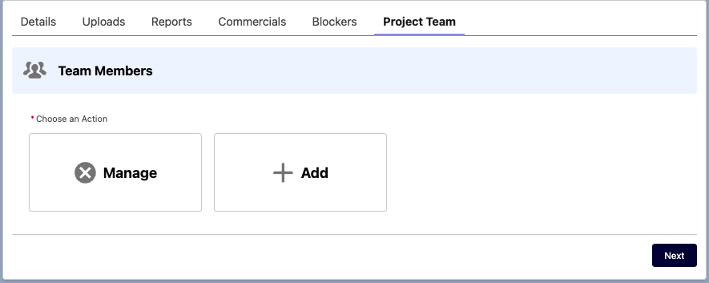
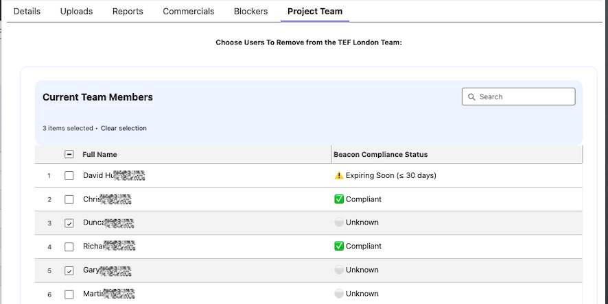
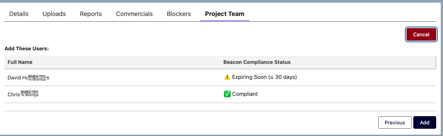
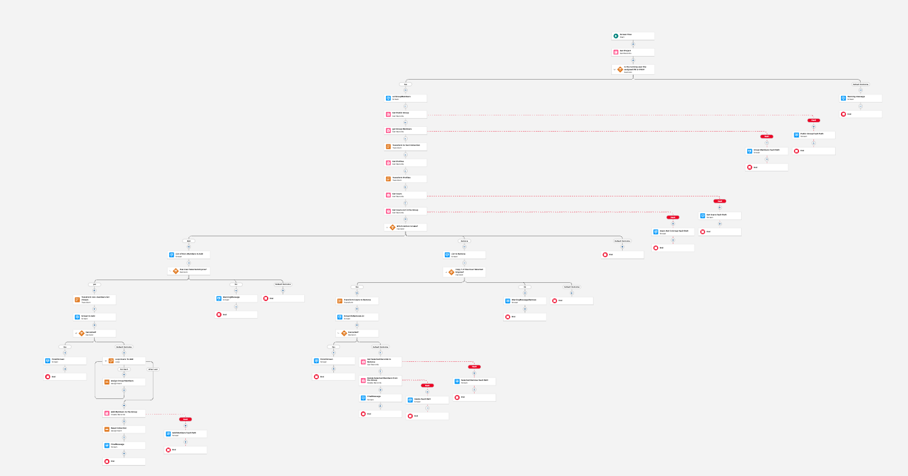
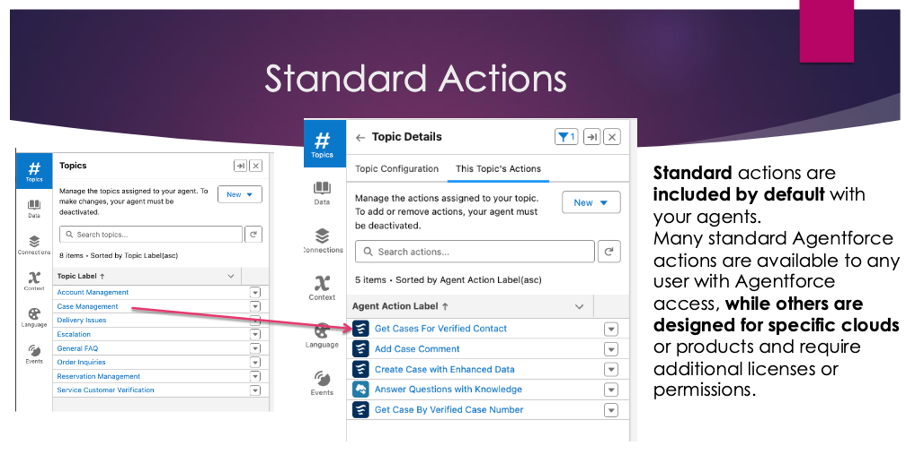
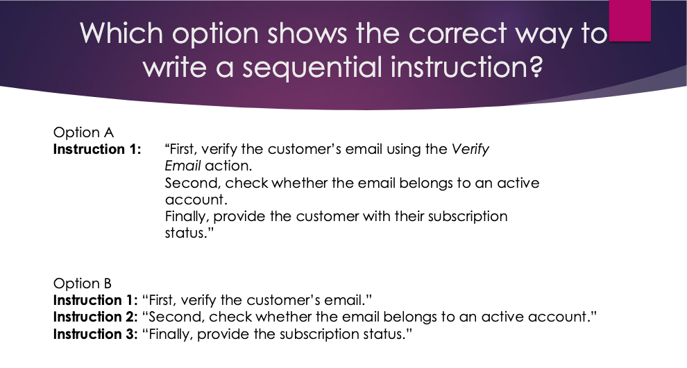
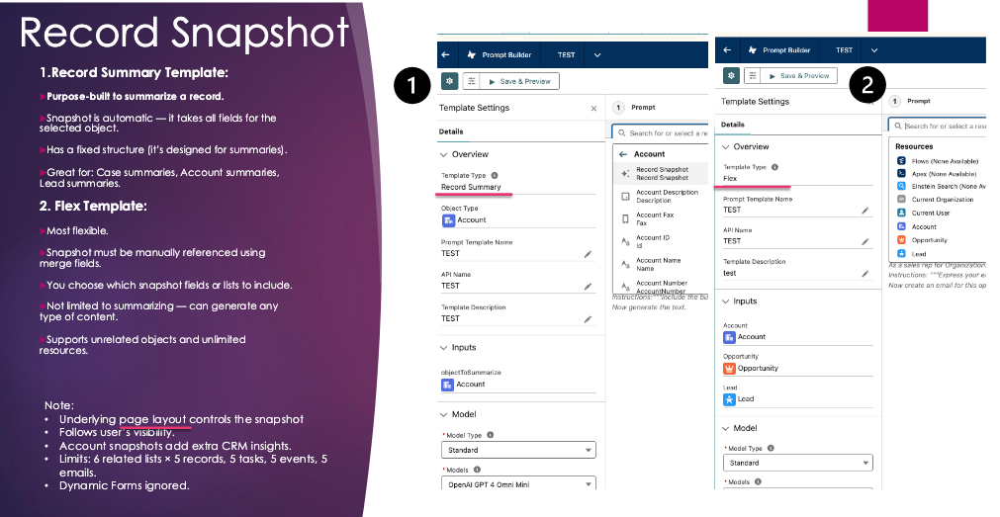
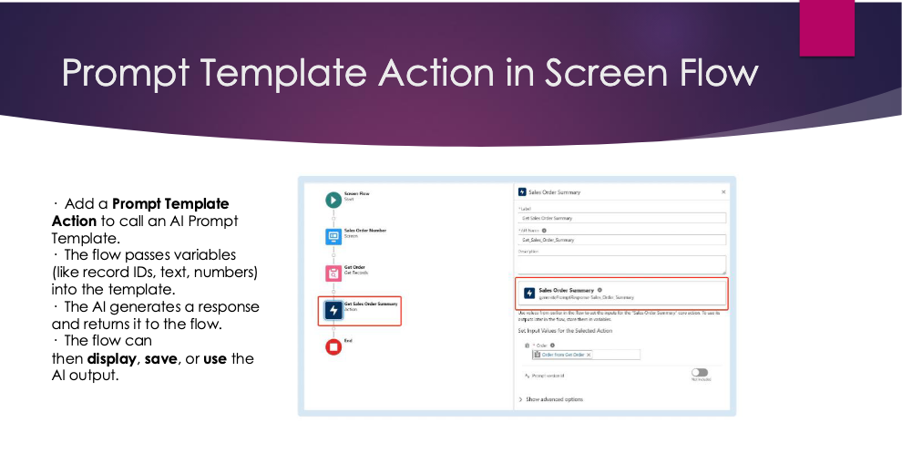

Intro

I’ve been part of the Salesforce ecosystem for just over a year, and I love it.
Salesforce has become my work, my hobby, and—my friend.
My mindset is that the sky is the limit, let's go!
I have been spending my weekends and after work continuously
studying/experimenting/challenging myself,
because I want to go up, and I want to do it fast 🤣
I have been using AI and we need to embrace this tool - I can build any idea that comes to mind -
how science-fiction is that?
Have a look at my LWC tasks, very complex developer solutions done in a day.
This does fascinate me!
View Flows
Flows
Select a project to view details and screenshots.
Go to Agentforce
Public Group Management
Problem
Salesforce’s native permission model blocks project managers from adding or removing users from project public groups,
creating unnecessary admin dependency.
Solution
A system-context screen flow that lets approved users add or remove public group members safely.
Screenshots




Key points
- Used GroupMember as the junction object to add and remove members by GroupMember.Id.
- Converted record collections into text collections to support efficient IN and NOT IN filtering.
- Validated that users were selected before processing.
- Added a confirmation step to prevent accidental changes.
Back to Flows
Lead Conversion Demo
A demo build to understand and showcase how Salesforce converts Leads into Accounts, Contacts, and Opportunities,
including matching and duplicate behaviour.
What I built
- Clear qualification path from Lead to conversion outputs.
- Tested scenarios where Salesforce detects existing Accounts/Contacts during conversion.
- Documented edge cases and setup decisions.
Screenshots

Back to Flows
Flow Automation: Product Filtering
A refactor of a complex screen flow to reduce decision logic and make behaviour data-driven and easier to maintain.
What I improved
- Filtered selectable products using a checkbox on Product2.
- Reduced branching by relying on record data instead of hard-coded decisions.
- Used loop + assignments patterns for scalable input handling.
Screenshots

Back to Flows
Agentforce
Go to LWC
Agentforce setup and overview
Add a short summary of what you set up and how you structured the overview for others.
Back to Agentforce
My Presentation
I ran an Agentforce training session for my colleagues and created a presentation to explain what Agentforce is.
The PowerPoint is around 100 slides and focuses on the topics people need to understand quickly for the exam.
View the PDF Here.
Some Sample slides




Back to Agentforce
Demo build and examples
Add a short summary of your demo build and what it demonstrated.
Back to Agentforce
LWC
Add your LWC work here. For example: a custom component that shows related records, supports multi-select, and launches a screen flow.
Contact
Contact